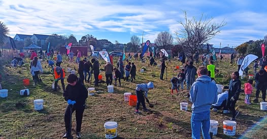

How can I help?
Come along to a planting day, or support us with a donation of money or materials.
Get involved

Join a planting day!

For 2026, we're holding four planting days. Please follow the Facebook group for more information, and for weather related updates!
-
Planting 1
Sunday 17th May, 2026
-
Planting 2
Sunday 21st June, 2026
-
Planting 3
Sunday 2nd August, 2026
-
Planting 4
Sunday 6th September, 2026
Follow us for updates:

Support us
Donate!
Donations of money or relevant material is always useful! Please donate money to Eco-Action Nursery Trust.
Bank account number
01 0815 0128021 00
If you'd like a receipt for your donation, please contact Chris at ecoactionnt@gmail.com
If you'd like to donate material like tools, mulch, pots, wheelie bins, etc, please contact ecoactionnt@gmail.com
Thank you for your help!